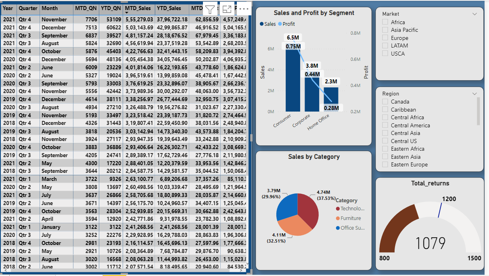

Global Superstore
(Created on Power BI)
Global Superstore is a dataset which has around 5000 values. Its a customer centric dataset
which has the data of all the orders that have been placed through different vendors and markets,
starting from the years 2018 to 2021. This data has been feeded into excel workbook for providing
insights and to create visualization through Power BI.
The above snapshot of the visual provides information on different KPi's metrics along with showcasing sales
by region on Map Chart.The information can be filtered on yearly basis by selecting any button from the available option
on top. All the data transformations behind this was done on power query editor.
The second chart as per the below visual exhibits sales on MTD, QTD & YTD basis along with other KPIs
Here the numbers can be filtered on the basis of different markets and regions. 